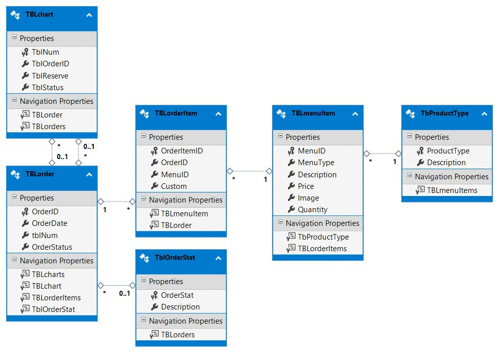

The twenty-first century is known formation technologies, and as technology rapidly advance, many restaurants advantage new technology. In recent years, the restaurant Point-of-Sale (POS) system has evolved dramatically. The most popular (modern) POS systems include lightspeed, Clover and Toast, etc. All these POS systems allow restaurants to place orders for the customers, keep track of restaurant inventory, etc.[1] In fact, the first POS was a cash register, invented in 1879. The first commercial use of POS system was created by IBM in 1973. IBM’s POS system allowed restaurants to process and record orders. As the technology evolved, POS systems became the control center for every restaurant and, an essential database of transactional data that we use today.
We propose an ordering system, which simplifies the ordering process for both the customer and the restaurant staff. The POS system wouldIt offer restaurant an appliance that allows servers or managers to place orders, make reservations, show when any food is sold out, and send orders directly to the kitchen. After customers make their selection, customers can review the details of their selection at the checkout page, providing instant visual confirmation of what was being purchased. POS systems It reduces order mistakes and helps to prevent confusions for the customers.
POS systems also lightened the heavy load that was on restaurants. Today, restaurant staffs no longer need to write down orders manually, as the entire process of taking orders can be done through the system. It allows restaurant managers better manage their staff for food preparation or other services. Researchers predicts that, in near future, retail point of sale will be more cloud centric. Cloud apps will enable retailers to better manage their sales, inventory, and customers across several stores and channels.
General objective:
• Improve efficiency of ordering process.
•Increase speed of services, sales volumes, and customer satisfaction.
Ordering system specifications:
•Add Menu Item
-Enable users to add menu items, including picture, price, quantity and category of the item.
•View Menu Item
-Enable to display all menu items with description, price, image, quantity of the item.
- Enable users to make adjustments to any menu item, such as price and quantity or delete the menu item.
-Enable users to display certain categories of the items.
•Open POS
-Display different menu items
-Place order for carry out and dine in
-Make payments
summary food items are ordered, total amounts are due,payment amount is received and print receipt
•Sales Graph
-Display a graph showing the quantity of each item sold
•View orders
-Display different orders (open, paid, served, complete)
-Allow users to mark any orders as pay order, serve order or complete
To achieve our project objectives, our team used the waterfall development process to develop the features of the point of sale system. Considering that our intended users are the restaurant owner, manager, and employees, we created an ordering system that will run on a local machine. Because the POS system is heavily dependant on having a database, we created the program in C# in Visual Studio 2019. Our first task was to create the database. We created tables to define the objects and associations between the objects. We had the orders themselves, which consisted of items in the order. The items in the order were defined by the menu items. On top of that, each item in the menu and the order status can be categorized, requiring additional tables. Once we had the tables and their definitions completed, we moved on to designing the user interface.

We found a youtube video that gave an introduction of the basic restaurant Point of sale system. [1] In the video, it talks about the adding menu items, quantity of the menu etc. This gave us a better understanding of mapping our own POS system and creating functionality.
Feature of the software:
Our POS software includes a main menu which allows users to navigate to two main sections, Inventory Management, and Operations section. Under Inventory Management, there are two sub-section, View Menu Items and Add Menu Items. For the Operation section, there are three sections, Open POS, Sales Graph, View Orders.
Inventory Management:
Add Menu Items page, users are able to add menu items. Users can input the item name, upload a picture of the item, add price, quantity of the item and set category and save changes.
View Menu Item page, It displays all menu items with description, price, image, quantity of all items. Users can make adjustments to any menu item, such as price and quantity or delete the menu item. It also allows users to display certain categories of the items.
Operation section:
Open POS, It allows restaurant staff to place orders for carry out and dine in. On the left side of the screen , it displays different menu items in different categories. User can select menu items from there, if it is a carry out order, the user can select the ‘pay now’ option, it prompts the user to the payment page, on the payment page, it summarizes all food items are ordered, total is due and payment is received. Once the payment is received, enter the amount in the ‘payment amount’ column. It automatically calculates the change and print receipt. If it is a dine in order, the user needs to select the ‘place order’ option, and a screen with order number will pop-up indicating successfully placing an order.
Sales Graph displays a graph showing the quantity of each item sold.It can be used to indicate which menu item is most popular and how many items are sold in a certain period of time.
View orders page, display different orders. All orders are separate into four categories, open, paid, served and complete. It also allows users to mark any orders as pay order, serve order or complete.
Difficulties:
Although a few of our teamates were familiar with SQL database creation, learning to code in C# was our biggest challenge. This was the first time any of members on our team have developed a project using the methods used. Visual Studio 2019 has a vast amount of capabilities. It took a significant amount reasearch to learn the various tools in Visual Studio and the methodology of C#. When we were coding, Visual Studio had a built in suggestion feature that was very helpful in exploring additional features we were looking for. One challenge that set our timeline back a week was learning to integrate Github with our database in Visual Studio. When we first try to push update, we had errors. This issue stopped us from being able to share and collaborate effectively for a time. Upon further research, we learned that it was very important to disconnect and release the database before we pushed updates to Github.
Improvements:
Creating a POS system carries a necessity to consider the security of the customer as well as the restaurant. The POS system can not allow for the customer’s credit and debit card information get compromised as well as it must be able to protect the employee’s private information. As the developers of this POS system, it is our responsibility to make sure that all personal data is not allowed to be publicly accessible. We also hold the ethical responsibility to not have the POS system itself steal the customer or the employee’s private data. This includes logging the credit and debit card information for personal use or using the employee’s information to steal any of their identities. Without being able to provide these services to the upmost of our ability we would be in violation of the engineering code of ethics. “to hold paramount the safety, health, and welfare of the public, to strive to comply with ethical design and sustainable development practices, to protect the privacy of others, and to disclose promptly factors that might endanger the public or the environment” (IEEE Code of Ethics) [2]. Disregarding such responsibilities is of immediate violation and would be grounds for a lawsuit against the company or developers.
This POS system will be able to be further adapted and molded to meet the rising and increasing needs for the users of the system. With continued growth and development, it allows for the needs of our POS software to also be ever changing allowing for its longevity. This cycle of lifelong learning and continued updates is crucial to the development of better software as it will allow for new developments while the older features become more developed and refined to better suit the needs at the given time, as well as the customer. While the newly developed features will have their spotlight to shine and bring forward new capabilities.
The impact of this POS system on restaurants is not small. With the addition of the POS system the restaurant will be able to increase organization, speed, clarity, and analytical capabilities. This will be a great benefit for the restaurant and better allow for growth and expansion in the future of the business. On the customer side of the implementation the customer will receive an easy and swift check out experience. This will allow for both a better customer interaction and also for more people to be checked out in a shorter amount of time allowing for the possibility of scaling one’s business to heights that was once not reachable. These benefits are great for both sides of those who interact with the POS system allowing for a greater positive impact on the society as a whole.
POS systems in restaurants are convenient, effective, and easy to use. It reduces the amount of time it takes to place and order and improves the overall performance of the restaurant. In the future, POS systems will become more sophisticated to meet user needs. Some of current POS systems haves already started to focus on areas such as checking food temperature, monitoring food safety, and sales reporting and forecasting.[3] According to Grand View Research, the market for POS systems has grown significantly and the, POS market is expected to reach $25 billion by 2028, driven by the benefits these systems provide in a quickly changing environment. Another interesting fact is that most shoppers today are shifting from cash to mobile payment. [5] A survey done by MasterCard Incorporated indicates that 73% of shoppers use less cash than in the past and eight out of 10 customers use smartphones or some other digital technology to make their payment as they shop in the store. In the near future, we believe as more and more people start using mobile pay, modern POS systems need to accept different mobile payments, not only limited to credit card transactions and cash.
This project presented us with many challenges and altered our timeline and proposed feature set significantly. We realized how crucial it was to establish a well thought out database before implementing our features. As such, a large portion of our time was put into thoroughly developing the database in a way that we could easily manipulate data yet be cohesive. Once we learned how to map our features with our database, developing the GUI pages was relatiely easy.
Handwriting customer’s orders is outdated and has many limitations; It takes a longer amount of time to place an order, increases chances of human error, and can be a huge burden on restaurants. As this project is for developing an ordering system application for restaurants, the application allows restaurant staff to place orders for customers, either carry out orders or dine-in orders. On our main POS page, it calculates the total and print order receipts to the customer. Our order system also allows users to add any menu items or delete menu items. It provides flexibility of the restaurant menu as most restaurants constantly update their restaurant menu items to meet the customer needs. Our POS system also features statistical analysis of past orders, allowing the user to know which items are in demand. Although there are many features that can still be implemented, the project has met the objective of creating a system that helps manage and fulfil orders.
More importantly, our software development skillset grew as a team. Not only is each team member more well-rounded, we learned to effectively plan and work with each other. Learning C# and .NET basics will serve us many years to come. Learning to push through challenges, to always be learning, and to work together, will help up develop into proffesionals in our fields. Although we did not meet every one of our goals for the POS system, we came together in the end to deliver a product that has potential to still be developed.
[1]D. J. Oamen, “How to create point of sale management system in visual basic.net - full tutorial,” YouTube, 17-Feb-2017. [Online]. Available: https://www.youtube.com/watch?v=DCCMLBNEds8. [Accessed: 26-Nov-2021].
[2]D. Liew, “Visual Basic 2019 Handbook,” Visual Basic 2019 Handbook A Concise Guide to VB2019 Programming, 2019. [Online]. Available: https://www.vbtutor.net/vb2019/vb2019hndbk_preview.pdf. [Accessed: 2021].
[3] “IEEE code of Ethics,” IEEE. [Online]. Available: https://www.ieee.org/about/corporate/governance/p7-8.html. [Accessed: 01-Oct-2021].
[4] “Restaurant point-of-sale terminal market worth $25.95 billion by 2028,” Market Research Reports & Consulting. [Online]. Available: https://www.grandviewresearch.com/press-release/global-restaurant-point-of-sale-pos-terminal-market.
[5]“Survey examines shift towards cashless society – Americans use less cash today than 10 years ago,” MasterCard Social Newsroom. [Online]. Available: https://newsroom.mastercard.com/press-releases/survey-examines-shift-towards-cashless-society-americans-use-less-cash-today-than-10-years-ago/. [Accessed: 26-Nov-2021].